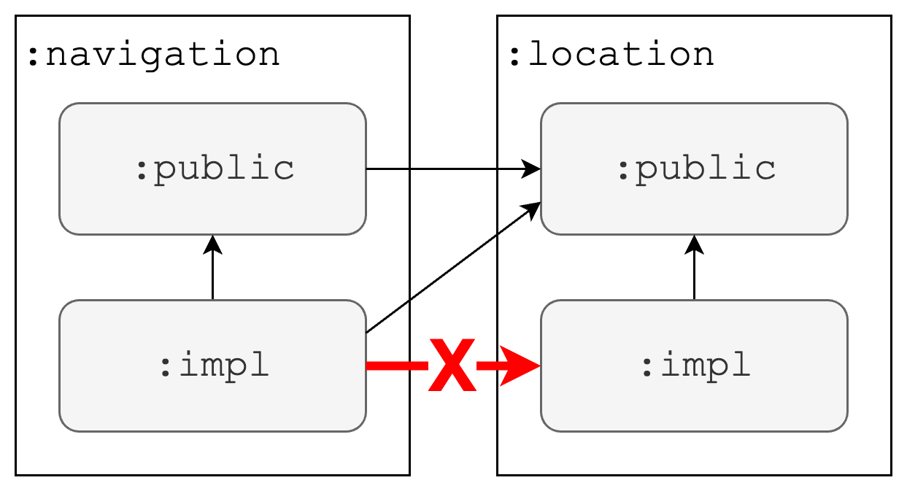
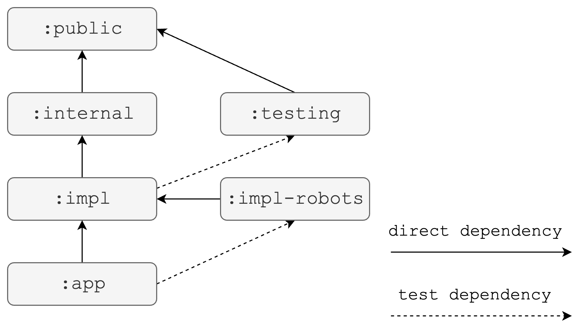
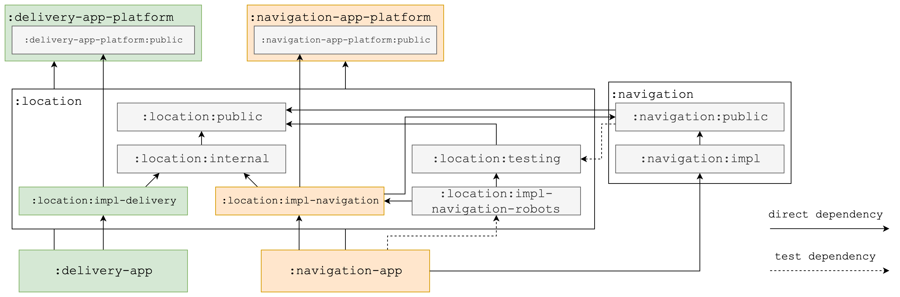

Module Structure¶
Note
Using the module structure is an opt-in feature through the Gradle DSL. The default value is false and
this feature has to be enabled for each module.
appPlatform {
enableModuleStructure true
}
Tip
:impl modules are usually imported by the final :app
modules. This also applies to App Platform itself. This Gradle option imports all necessary :impl modules for
enabled features.
appPlatform {
addImplModuleDependencies true
}
Sample
App Platform itself and the sample app use the module structure to separate APIs from implementations. The sample app highlights how we structure code and make use of the various module types.
Dependency inversion¶
Dependency inversion means that high-level APIs don’t depend on low-level details and low-level details only import other high-level APIs. It significantly reduces coupling between components. Dependency inversion can be implemented on different levels, e.g. in code and in the module structure.
Kotlin code¶
Dependency inversion implemented in Kotlin code refers to having abstractions in place instead of relying on concrete implementations. Imagine this example:
class AccountProvider(
private val database: SqliteDatabase,
...
) {
val currentAccount: StateFlow<Account> = ...
fun updateCurrentAccount(account: Account) {
...
}
}
class ChangeAccountHandler(
private val accountProvider: AccountProvider
) {
private fun onAccountChanged(account: Account) {
accountProvider.updateCurrentAccount(account)
...
}
}
ChangeAccountHandler has a strong dependency on AccountProvider. This is problematic in multiple ways.
Evolving AccountProvider is challenging, because implementation details are easily leaked and become
part of the public API. Every dependency from AccountProvider is exposed to consumers, e.g. ChangeAccountHandler
knows that AccountProvider uses Sqlite for its implementation, a detail which should be hidden and makes
dependency graphs unnecessarily large. ChangeAccountHandler is hard to test. One has to spin up a Sqlite database
in a unit test environment in order to instantiate AccountProvider and pass it as argument to
ChangeAccountHandler.
A much better approach is introducing abstract APIs:
interface AccountProvider {
val currentAccount: StateFlow<Account>
fun updateCurrentAccount(account: Account)
}
class SqliteAccountProvider(
private val database: SqliteDatabase
...
) : AccountProvider {
@VisibleForTesting
val allAccounts: List<Account> = ...
...
}
The interface AccountProvider solves the mentioned shortcomings. SqliteAccountProvider can change and
for example expose more fields (allAccounts in this sample) for verifications in unit tests without anyone
knowing as the interface doesn’t need to be updated. Sqlite is a pure implementation detail and no consumer
of AccountProvider has to know about it. This allows us to easily swap the implementation for a fake
AccountProvider together with fake data in a unit test for ChangeAccountHandler.
Breaking the dependency serves an additional purpose especially in Kotlin Multiplatform when implementations have platform dependencies:
// commonMain
interface SqlDriver
// androidMain
class AndroidSqlDriver(context: Context) : SqlDriver
// iosMain
class NativeSqlDriver() : SqlDriver
Notice how the Android implementation has a strong dependency on the Android runtime through the Context
class. Relying on interfaces / abstract classes together with dependency injection is the
preferred way (1)
over expect / actual functions to implement dependency inversion as this approach allows platform specific changes.
- When you use a DI framework, you inject all of the dependencies through this framework. The same logic applies to handling platform dependencies. We recommend continuing to use DI if you already have it in your project, rather than using the expected and actual functions manually. This way, you can avoid mixing two different ways of injecting dependencies.
Gradle modules¶
The App Platform separates APIs from implementations by splitting the code in separate Gradle modules. The same recommendation applies not only to other core libraries but also feature code due to the many benefits such as smaller dependency graphs, lower coupling and a simple mechanism to replace dependencies with fakes.
Imagine having two implementations of the shared interface LocationProvider for two applications
Delivery App and Navigation App:
interface LocationProvider {
val location: StateFlow<Location>
}
class DeliveryAppLocationProvider(
private val dataLayer: DeliveryAppDataLayer,
...
) : LocationProvider {..}
class NavigationAppLocationProvider(
private val application: NavigationApplication,
...
) : LocationProvider {..}
If both classes live in the same module, then the shared Gradle module must depend on modules belonging to Delivery and Navigation App at the same time. This is not ideal, because then the Delivery App would automatically depend on code from the Navigation App and the Navigation App on Delivery App code through a transitive dependency as highlighted in the diagram below.
%%{init: {'themeCSS': '.label { font-family: monospace; }'}}%%
graph TD
delivery-platform["`:delivery-platform`"]
navigation-platform["`:navigation-platform`"]
location["`**:location**
*DeliveryAppLocationProvider*
*NavigationAppLocationProvider*`"]
delivery-app["`:delivery-app`"]
navigation-app["`:navigation-app`"]
delivery-platform --> location
navigation-platform --> location
location --> delivery-app
location --> navigation-appTo avoid the issue of the transitive dependencies, concrete implementation classes DeliveryAppLocationProvider
and NavigationAppLocationProvider could be moved into the final respective application packages :delivery-app
and :navigation-app.
%%{init: {'themeCSS': '.label { font-family: monospace; }'}}%%
graph TD
delivery-platform["`:delivery-platform`"]
location["`:location`"]
navigation-platform["`:navigation-platform`"]
delivery-app["`**:delivery-app**
*DeliveryAppLocationProvider*`"]
navigation-app["`**:navigation-app**
*NavigationAppLocationProvider*`"]
delivery-platform --> delivery-app
navigation-platform --> navigation-app
location --> delivery-app
location --> navigation-appHowever, this would be a bad approach from a modularization standpoint. The app modules would become larger and larger over time and the many classes within it would have a low cohesion level. Build times get longer roughly linear to the size of the module, because individual build steps such as Kotlin compilation can’t be parallelized.
Instead, a similar approach to dependency inversion in Kotlin code is applied to modules. The shared package can be split into a public API and implementation sub-module:
%%{init: {'themeCSS': '.label { font-family: monospace; }'}}%%
graph TD
delivery-platform["`:delivery-platform`"]
location-public["`:location:public`"]
navigation-platform["`:navigation-platform`"]
location-impl-delivery["`**:location:impl-delivery**
*DeliveryAppLocationProvider*`"]
location-impl-navigation["`**:location:impl-navigation**
*NavigationAppLocationProvider*`"]
delivery-app["`:delivery-app`"]
navigation-app["`:navigation-app`"]
delivery-platform --> location-impl-delivery
navigation-platform --> location-impl-navigation
location-public --> location-impl-delivery
location-public --> location-impl-navigation
location-impl-delivery --> delivery-app
location-impl-navigation --> navigation-appBy cleanly separating shared code in :public modules from implementations in :impl modules we break
dependencies in our build graph. DeliveryAppLocationProvider and NavigationAppLocationProvider provide a
separate implementation for each application target of the shared API, have dependencies on each individual
platform and yet don’t leak any implementation details nor platform APIs.
Module rules¶
In order to follow the dependency inversion principle correctly the most important rule in this module structure
is that no other module but the final application module is allowed to depend on :impl modules. :public
modules on the other hand are widely shared and can be imported by any other module.

A library always comes with a single :public module for shared code. There can be zero, one or more :impl
modules, e.g. when dependency inversion isn’t needed, then the :impl module is redundant. When the implementation
can be shared between all apps, then only a single :impl module is needed. When there are multiple different
implementations for different applications, then multiple :impl modules are required like in the example above.
To make code easier to discover, it’s recommended to put all Gradle modules into the same sub module.
This module structure reduces coupling between libraries and increases cohesion within modules, which are two
desired attributes in a modularized codebase. :impl modules can change and be modified without impacting any
other library. Our build dependency graph stays flat and all :impl modules can be compiled and assembled in
parallel.
The :public / :impl module split is recommended whenever dependency inversion is needed for code, because of
all the benefits mentioned above. The split becomes more natural over time and the benefit increases. Rare
exceptions are when dependency inversion isn’t applied such as for sharing utilities like extension functions,
UI components or test helpers.
Module types¶
Beyond :public and :impl modules, there are further optional module types:

:public¶
:public modules contain the code that should be shared and reused by other modules and libraries.
APIs (interfaces) usually live in :public modules, but also code where dependency inversion isn’t applied
such as static utilities, extension functions and UI components.
:impl¶
:impl modules contain the concrete implementations of the API from :public modules. A library can have
zero or more :impl modules. If a library contains multiple :impl modules, then they’re suffixed with a name,
e.g. :login:impl-amazon and :login:impl-google.
:internal¶
:internal modules are used when code should be shared between multiple :impl modules of the same library,
but the code should not be exposed through the :public module. This code is internal to this library.
:testing¶
:testing modules provide a mechanism to share utilities or fake implementations for tests with other libraries.
:testing modules are allowed to be imported as test dependency by any other module type and are never added
to the runtime classpath. Even its own :public module can reuse the code from the :testing module for its tests.
:robots¶
:*-robots modules help implementing the robot pattern for UI tests and make them shareable. Robots must know
about concrete implementations, therefore they usually depend on an :impl module, but don’t expose this :impl
module on the compile classpath. :robot modules are only imported and reused for UI tests and are never
added as dependency to the runtime classpath of a module similar to :testing modules.
:app¶
:app modules refer to the final application, where all feature implementations are imported and assembled
as a single binary. Therefore, :app modules are allowed to depend on :impl modules of all imported libraries
and features.
Example¶
A more complex dependency graph could look like this:

This example highlights many of the more frequently used dependencies. Notice that the impl modules
:location:impl-delivery and :location:impl-navigation both depend on the internal module :location:internal
to share some implementations, but non-shared code lives in each :impl module. The :impl modules import
application specific code :delivery-app-platform:public and :navigation-app-platform:public safely without
leaking the code to the wrong app. Further, :location:impl-navigation imports and uses :navigation:public,
but neither the other impl module :location:impl-delivery nor its public module :location:public need to
know about this dependency or depend on it.
The second library :navigation:public, which imports :location:public, reuses testing module :location:testing
for its unit tests. This saves boilerplate to setup fake implementations of the shared APIs from :location:public
and discourages using mocking frameworks.
The app :navigation-app imports its specific impl module :location:impl-navigation. It also reuses the
robots from the :location:impl-navigation-robots module for its UI tests, further reducing strong dependencies
on concrete implementations and favoring reusability.
Gradle setup¶
Using the module structure is an opt-in feature through the Gradle DSL. The default value is false and
this feature has to be enabled for each module.
appPlatform {
enableModuleStructure true
}
With this setting enabled, several checks and features are enabled:
- App Platform ensures that the Gradle module follows the naming convention, e.g. it’s named
:publicor:impl. - Default dependencies are added, e.g. an
:implmodule imports its:publicmodule by default, or:impl-robotsimports its:implmodule by default. - An Android namespace is set automatically if it hasn’t been configured yet.
- A Gradle task
:checkModuleStructureDependenciesis registered, which verifies that module structure dependency rules are followed. The:checkGradle task automatically depends on:checkModuleStructureDependencies. - A consistent API for an
Project.artifactIdis available, e.g. for:my-module:publicit would returnmy-module-public.
Sample
The sample application doesn’t set the Android namespace anywhere. Instead, it relies on the default from
App Platform, e.g. the :sample:templates:impl module uses this generated namespace for its R class:
software.amazon.app.platform.sample.templates.impl.R
App Platform uses the Project.artifactId() API for its own modules. Publishing using the
Gradle Maven Publish Plugin is configured
here.
private fun mavenPublishing(project: Project) {
plugins.apply(Plugins.MAVEN_PUBLISH)
project.extensions
.getByType(MavenPublishBaseExtension::class.java)
.coordinates(artifactId = project.artifactId())
}